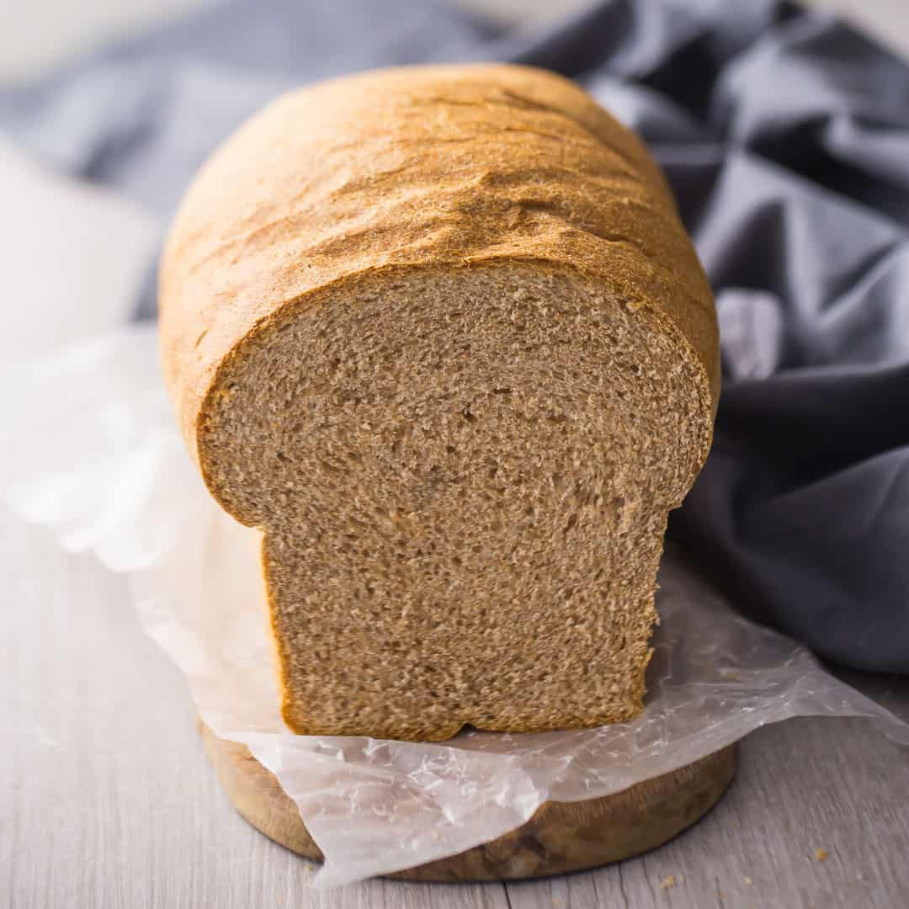

Wheat Bread

Ingredients
- 1-1/2 cups warm water
- 1/4 ounce active dry yeast
- 1/4 cup honey
- 3 tbsp unsalted butter, softened
- 3-3/4 cups whole wheat flour
- 1/2 tsp kosher salt
Instructions
- Place the warm water in a large bowl and sprinkle the yeast on top. Set aside for 5 minutes to allow the yeast to proof.
- Add the honey and butter.
- Blend in 2 cups of the flour and the salt until moistened. Beat on medium speed for 3 minutes.
-
- Stir in an additional 1 1/4 to 1 3/4 cups flour, until dough pulls away cleanly from the sides of the bowl.
- Knead on floured surface, adding 1/2 to 3/4 cup additional flour, until dough is smooth and elastic, about 10 minutes.
- Place dough in large greased bowl and cover loosely with plastic wrap. Let rise in warm place until doubled in size, 30 to 45 minutes.
- Lightly mist a 9x5-inch loaf pan with non-stick spray.
- Punch down the dough and shape it into a loaf.
- Place in prepared pan, cover loosely with greased plastic wrap, and let rise in warm place until doubled in size, 30 to 45 minutes.
- Preheat the oven to 350°F.
- Uncover dough, and bake 40 to 45 minutes or until loaf sounds hollow when lightly tapped.
Back to Home